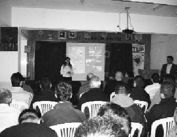

Seminer verdiğim günün bitiminde insanlara faydalı olmanın mutluluğunu yaşıyorum ve hayatım boyunca seminer vermek istiyorum. Çünkü ihtiyacı olanlara yardımcı olmak, bir şeyler vermek harika bir duygu. Türkiye Uğur Böcekleri Projesi benim hayata dair sorumluluklarımın bir parçası. (Eda Sincar)
Eda deyince aklıma iki kelime geliyor: sorumluluk ve ciddiyet. Üzerine aldığı her işi layıkıyla yapacak bir genç Eda. Projede çok büyük emekleri var Eda kardeşimin.